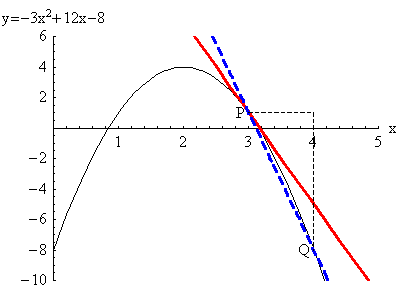
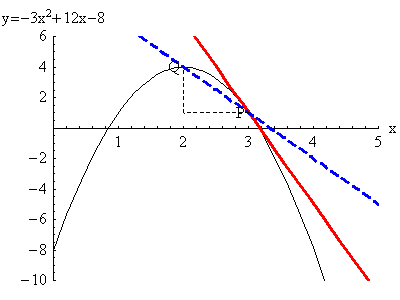

Rates of Change
Average velocity
is the distance traveled and \(\Delta t\) is the time elapsed. We use
the Greek letter \(\Delta\) to mean “change in”. If we start at
position \(s(t_0)\) at time \(t_0\) and end up at position \(s(t_1)\) at
time \(t_1\), then
\(\Delta s = s(t_1) - s(t_0)\)
\(\Delta t = t_1 - t_0\)
If you plot position against time on a graph, \(v_{avg}\) is the slope of a secant line.
Video

To get the instantaneous velocity at a particular time \(t=a\), we average over shorter and shorter time intervals. That is, we compute the average velocity between time \(a\) and \(a + \Delta t\), and then take a limit as \(\Delta t \to 0\). On a graph, this is taking the slope of secant lines between points that are getting closer and closer. In the limit, we get the slope of a tangent line.
Whether we think in terms of velocity or slope, we get a limit: \(\lim_{\Delta t \to 0} \frac{s(a+\Delta t)-s(a)}{\Delta t}.\) This can also be written as: \(\lim_{t \to a} \frac{s(t)-s(a)}{t-a}\), where \(t=a+\Delta t\). This quantity (if the limit exists) is called the derivative of \(s(t)\) at time \(t=a\).
In the animations below, \(a=3\), the \(x\) coordinate of point \(P\); and \(a+\Delta x\) is the \(x\)-coordinate of point \(Q\). The movement is the point \(Q\) approaching the point \(P\), which means \(3+\Delta x\) is getting closer to \(3\), which means \(\Delta x\) is getting closer to \(0\). The red tangent line (at \(P\)) is the limit of the blue secant lines through \(P\) and \(Q\). Note that \(\Delta x\) can be positive (first animation) or negative (second animation). For the derivative to exist, the limits as \(\Delta x \to 0^+\) and \(\Delta x \to 0^-\) must give the same answer.
Animations

(Animations from Barry McQuarrie)
Instantaneous velocity
In the following video, we illustrate this concept by considering the instantaneous velocity at time \(t=2\) of a particle with position \(s(t)=4t^2+3\), where \(t\) is time in seconds, and \(s\) is position in feet.
We now show here the computation of the instantaneous velocity at time \(t=2\) seconds of a particle with position \(s(t)=4t^2+3\) feet. We will need to compute either
\((1) \lim_{t\to 2}\frac{s(t)-s(2)}{t-2},\qquad\text{ or }\qquad (2) \lim_{h\to 0}\frac{s(2+h)-s(2)}{h}.\)
DO: Work through these examples carefully. Try to compute both limits before looking at the solutions below. The first one is also done on the previous video.
Computation
\((1)\quad \lim_{t\to 2}\frac{s(t)-s(2)}{t-2}=\lim_{t\to 2}\frac{(4t^2+3)-(4(2)^2+3)}{t-2}\)
\(=\lim_{t\to 2}\frac{4t^2+3-16-3}{t-2}=\lim_{t\to 2}\frac{4t^2-16}{t-2}\)
\(=\lim_{t\to 2}\frac{4(t^2-4)}{t-2}=\lim_{t\to 2}\frac{4(t-2)(t+2)}{t-2}=\lim_{t\to 2}4(t+2)=4(4)=16\)
\((2)\quad \lim_{h\to 0}\frac{s(2+h)-s(2)}{h}=\lim_{h\to 0}\frac{(4(2+h)^2+3)-(4(2^2)+3)}{h}\)
\(=\lim_{h\to 0}\frac{4(4+4h+h^2)+3-4(4)-3}{h}\)
\(=\lim_{h\to 0}\frac{16+16h+4h^2-16}{h}=\lim_{h\to 0}\frac{16h+4h^2}{h}=\lim_{h\to 0}(16+4h)=16\)
Notice that in both computations (until the denominator was cancelled) if we plugged \(t=2\) in, we would get the indeterminate form \(\frac{0}{0}\) (try it) so we had to do more work.
We see that the instantaneous velocity at \(t=2\) is 16 feet/second. Notice that the units come from the units of the numerator (feet) and the denominator (seconds) of the function we are taking the limit of–the average velocity function).
Also notice that the work required in either computation is similar. Often students prefer method (1), but in the next section you will be forced to use method (2), so be sure you practice it at least as much as method (1).
Computing an instantaneous rate of change of any function
}(2)_{h}.
DO: Work through these examples carefully. Try to compute both limits above before looking at the solutions below.
\((1)\quad f'(3)=\lim_{x\to 3}\frac{f(x)-f(3)}{x-3}=\lim_{x\to 3}\frac{\sqrt x-\sqrt 3}{x-3}\)
\(=\lim_{x\to 3}\frac{\sqrt x-\sqrt 3}{x-3}\frac{\sqrt x+\sqrt 3}{\sqrt x+\sqrt 3}\)
\(=\lim_{x\to 3}\frac{x-3}{(x-3)(\sqrt x+\sqrt 3)}\)
\(=\lim_{x\to 3}\frac{1}{\sqrt x+\sqrt 3}=\frac{1}{\sqrt 3+\sqrt 3}=\frac{1}{2\sqrt 3}\)
\((2)\quad f'(3)=\lim_{h\to 0}\frac{f(3+h)-f(3)}{h}=\lim_{h\to 0}\frac{\sqrt{3+h}-\sqrt 3}{h}\)
\(=\lim_{h\to 0}\frac{\sqrt{3+h}-\sqrt 3}{h}\frac{\sqrt{3+h}+\sqrt 3}{\sqrt{3+h}+\sqrt 3}\)
\(=\lim_{h\to 0}\frac{(3+h)-3}{h(\sqrt{3+h}+\sqrt 3)}=\lim_{h\to 0}\frac{h}{h(\sqrt{3+h}+\sqrt 3)}\)
\(=\lim_{h\to 0}\frac{1}{\sqrt{3+h}+\sqrt 3}=\lim_{h\to 0}\frac{1}{\sqrt 3+\sqrt 3}=\frac{1}{2\sqrt 3}\)
We see that the derivative of \(f\) at \(x=3\) is \(\frac{1}{2\sqrt 3}\), i.e. \(f'(3)=\frac{1}{2\sqrt 3}\).
Just as in the prior slide computing instantaneous velocity, notice that in both computations (until the denominator was cancelled) if we plugged \(x=3\) in, we would get the indeterminate form \(\frac{0}{0}\) (try it) so we had to do more work.
Also, again notice that the work required in either computation is similar. Be sure you practice method (2).
The equation of a tangent line
Suppose we have a curve \(y=f(x)\). To get the equation of the line tangent to our curve at \((a,f(a))\):
- Figure out the slope of the tangent line. This is \(m = f'(a)=\lim_{x \to a} \frac{f(x)-f(a)}{x-a} = \lim_{h \to 0} \frac{f(a+h)-f(a)}{h}.\)
- Use the point-slope formula \(y-y_1 = m(x-x_1)\) given \(m=f'(a)\) and the point \((x_1,y_1)=(a, f(a))\) to get the equation of the line: \(y - f(a) = f'(a) (x-a).\)
Notice: The slope of the tangent line to a function \(f\) at \(x=a\) is given by the derivative \(f'(a)\).
Say to yourself: slope derivative, derivative slope, slope derivative, and more such. These two concepts are tied together, where the derivative is at the point of tangency.
DO: Let \(g\) be a function for which \(g(4)=6\) and \(g'(4)=7\). What is the slope of the line tangent to \(g\) at \(x=4\)? What is the equation to the tangent line of \(g\) at \(x=4\)? Hint: use the box above, where \(f\) is \(g\) here, \(a\) is \(4\) here, and \(f(a)\) is \(g(4)\) here.
Remember, the point-slope formula \(y-y_1=m(x-x_1)\) is the best way to compute the equation of the tangent line, for reasons that will become apparent later, so practice with that form of the line (even if you have a preferred other method, such as plugging in a point to the slope-intercept form \(y=mx+b\).
The Derivative of a Function at a Point
The meaning of this derivative
The number which is the derivative of \(f\) at \(x=a\), denoted by \(f'(a)\), gives us the instantaneous rate of change of the function \(f\) with respect to \(x\) when \(x=a\).
If we are considering the graph of \(f\), \(f'(a)\) gives us the slope of the tangent line of \(f\) at $x=a`.
DO: Learn: The derivative of a function at a point gives us the
instantaneous rate of change of that function at that point and the slope of the tangent line
of that function at that point.
Warning: The definition of the derivative at a point is above. Some of the representations given by the derivative are in the paragraph immediately above, and these are not the definition.
Applications and units of derivatives
If \(f(t)\) represents the length of a deer’s antler, in inches, on a given day in May, and \(t\) represents time in days (with 1 being the first day of May), what does \(f'(10)=\) represent? Try to think this through before reading on, including units in your answer.
\(f'(10)\) should represent the rate of change of \(f\) on the day \(t=10\), so it is the rate of change of the length of the deer’s antler on May 10. So if \(f'(10)=\), the deer’s antler is growing at a rate of units on the 10th of May. The units are determined by the change in \(f\) divided by the change in \(t\), so the units are (units of \(f\))/(units of \(t\)). We see that the deer’s antler is growing at a rate of inches/day on the 10th of May.
Do: Let \(h(\theta)\) represent the height in meters of the end of a long ladder that is being raised, where \(\theta\), measured in radians, represents the angle of the ladder to the (horizontal) ground. What does \(h'(\frac{\pi}{6})=3\) represent, including units?